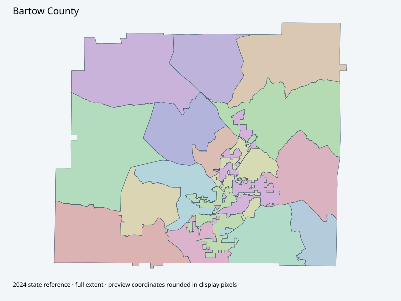

Map index · 17 explicit-FIPS 2024 map rows; 17 historical result identities. No approved crosswalk.

Full native coordinate/attribute extraction (gzip JSON) · Original complete statewide ZIP
Actual current county election root -> Election Maps page retained. No downloadable precinct original exposed in captured page. Complete2024 state geometry retained; current countywide approval/crosswalk not established.
Full objects, county source IDs/clocks and attributes: all 2,701 native contexts. isVirtual:false and source label precinct do not prove physical geometry.
| Source name | Full source GUID | Breakdown ordinal | Source | Map status |
|---|---|---|---|---|
| Adairsville | 01000000-d884-2e72-df79-08dcda4b8865 | 0 | 2024NovGen--bartow-county-ga | unreviewed / no approved map join |
| Allatoona | 01000000-d884-2e72-6692-08dcda4b8867 | 1 | 2024NovGen--bartow-county-ga | unreviewed / no approved map join |
| Cartersville East | 01000000-d884-2e72-edb3-08dcda4b8868 | 2 | 2024NovGen--bartow-county-ga | unreviewed / no approved map join |
| Cartersville West | 01000000-d884-2e72-75df-08dcda4b886a | 3 | 2024NovGen--bartow-county-ga | unreviewed / no approved map join |
| Cassville | 01000000-d884-2e72-dd38-08dcda4b886b | 4 | 2024NovGen--bartow-county-ga | unreviewed / no approved map join |
| Center | 01000000-d884-2e72-4a84-08dcda4b886d | 5 | 2024NovGen--bartow-county-ga | unreviewed / no approved map join |
| Emerson | 01000000-d884-2e72-a804-08dcda4b886e | 6 | 2024NovGen--bartow-county-ga | unreviewed / no approved map join |
| Euharlee | 01000000-d884-2e72-0f0a-08dcda4b8870 | 7 | 2024NovGen--bartow-county-ga | unreviewed / no approved map join |
| Folsom | 01000000-d884-2e72-b53e-08dcda4b8871 | 8 | 2024NovGen--bartow-county-ga | unreviewed / no approved map join |
| Kingston | 01000000-d884-2e72-4978-08dcda4b8873 | 9 | 2024NovGen--bartow-county-ga | unreviewed / no approved map join |
| Mission Road | 01000000-d884-2e72-c08a-08dcda4b8874 | 10 | 2024NovGen--bartow-county-ga | unreviewed / no approved map join |
| Pine Log | 01000000-d884-2e72-2edf-08dcda4b8876 | 11 | 2024NovGen--bartow-county-ga | unreviewed / no approved map join |
| Taylorsville | 01000000-d884-2e72-8d0b-08dcda4b8877 | 12 | 2024NovGen--bartow-county-ga | unreviewed / no approved map join |
| White | 01000000-d884-2e72-e17e-08dcda4b8878 | 13 | 2024NovGen--bartow-county-ga | unreviewed / no approved map join |
| Zena Drive | 01000000-d884-2e72-3e97-08dcda4b887a | 14 | 2024NovGen--bartow-county-ga | unreviewed / no approved map join |
| Hamilton Crossing | 01000000-d884-2e72-9986-08dcda4b887b | 15 | 2024NovGen--bartow-county-ga | unreviewed / no approved map join |
| Woodland | 01000000-d884-2e72-f3b9-08dcda4b887c | 16 | 2024NovGen--bartow-county-ga | unreviewed / no approved map join |
| Original row ordinal | DISTRICT | PRECINCT_I | PRECINCT_N |
|---|---|---|---|
| 1219 | 01514 | 14 | TAYLORSVILLE |
| 1220 | 01510 | 10 | KINGSTON |
| 2229 | 0151 | 1 | ADAIRSVILLE |
| 2288 | 0158 | 8 | EUHARLEE |
| 2289 | 01511 | 11 | MISSION ROAD |
| 2290 | 01518 | 18 | WOODLAND |
| 2291 | 0154 | 4 | CARTERSVILLE WEST |
| 2292 | 01517 | 17 | HAMILTON CROSSING |
| 2293 | 0155 | 5 | CASSVILLE |
| 2294 | 0157 | 7 | EMERSON |
| 2295 | 0153 | 3 | CARTERSVILLE EAST |
| 2296 | 01516 | 16 | ZENA DRIVE |
| 2297 | 0152 | 2 | ALLATOONA |
| 2298 | 0156 | 6 | CENTER |
| 2299 | 01515 | 15 | WHITE |
| 2301 | 0159 | 9 | FOLSOM |
| 2305 | 01512 | 12 | PINE LOG |